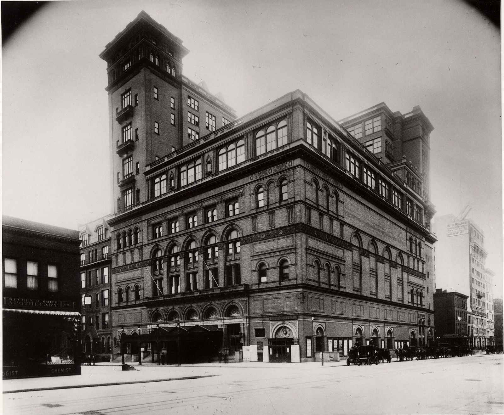

Как попасть в Карнеги-холл
Карнеги-холл открылся в 1891 году. На открытии дирижировал Пётр Ильич Чайковский: ради этого он приплыл в Америку.
У американцев есть старый анекдот. Прохожий спрашивает музыканта на улице: «Как попасть в Карнеги-холл?» Тот отвечает: «Репетировать, репетировать и репетировать». Час с пианино два дня назад был ровно про это.
